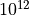

Some examples of lenstool usage on Jupyter Notebook
The SIS model (Singular Isothermal Sphere)
In this notebook we will showcase lensing modelling with Lenstool using the SIS model.
from astropy.io import fits
import matplotlib.pyplot as plt
from astropy.wcs import WCS
from astropy.table import Table
from matplotlib.patches import Ellipse
from matplotlib.patches import Circle
import os
import matplotlib.cm as cm
from matplotlib.colors import Normalize
import numpy
import lenstool
from lenstool.potentials import sis
lt = lenstool.Lenstool()
lt.add_lens(sis(0.,0.,0.3,800))
lt.set_cosmology(70, 0.3, 0.7, -1)
lt.set_field(50)
lt.set_grid(1000, 1)
type 1, n b'1', C x 0.0, y 0.0, epot 0.0, epot2 0.0, emass 0.0, theta 0.0, phi 0.0, sigma 800.0, sigma_obs 0.0, sigma_obs_err 0.0, rc 0.0, rckpc 0.0, rcut 0.0, rcutkpc 0.0, alpha 0.0, beta 0.0, rcslope 0.0, z 0.3, dlsds 0.0, psicut 0.0, psimcut 0.0, psiccut 0.0, b0 0.0, masse 0.0, masse_star 0.0, pmass 0.0, cr 0.0, ct 0.0, mag 0.0, lum 0.0, mtol 0.0, effradius 0.0, costheta 1.0, sintheta 0.0, cosphi 1.0, sinphi 0.0, dplxmap <lenstool.structure.LP_g_pixel object at 0x7fcbaff860c0>, dplymap <lenstool.structure.LP_g_pixel object at 0x7fcbaff85fc0>, kappamap <lenstool.structure.LP_g_pixel object at 0x7fcbaff86140>, gamma1map <lenstool.structure.LP_g_pixel object at 0x7fcbaff861c0>, gamma2map <lenstool.structure.LP_g_pixel object at 0x7fcbaff86240>, potenmap <lenstool.structure.LP_g_pixel object at 0x7fcbaff862c0>, dplx_spline <lenstool.structure.LP_Bspline2D_red object at 0x7fcbaff86340>, dply_spline <lenstool.structure.LP_Bspline2D_red object at 0x7fcbaff863c0>, kappa_spline <lenstool.structure.LP_Bspline2D_red object at 0x7fcbaff86440>, gamma1_spline <lenstool.structure.LP_Bspline2D_red object at 0x7fcbaff864c0>, gamma2_spline <lenstool.structure.LP_Bspline2D_red object at 0x7fcbaff86540>, poten_spline <lenstool.structure.LP_Bspline2D_red object at 0x7fcbaff865c0>, Bspline <lenstool.structure.LP_Bspline2D object at 0x7fcbaff86640>, X_bool 0, gas_frac 1.0, _3D_bool 0, _3D_conv_fac 1.0, _3D_scale_fac 1.0, emass2 0.0, costheta_3D 1.0, sintheta_3D 0.0
type 1, n b'1', C x 0.0, y 0.0, epot 0.0, epot2 0.0, emass 0.0, theta 0.0, phi 0.0, sigma 800.0, sigma_obs 0.0, sigma_obs_err 0.0, rc 0.0, rckpc 0.0, rcut 0.0, rcutkpc 0.0, alpha 0.0, beta 0.0, rcslope 0.0, z 0.3, dlsds 0.0, psicut 0.0, psimcut 0.0, psiccut 0.0, b0 0.0, masse 0.0, masse_star 0.0, pmass 0.0, cr 0.0, ct 0.0, mag 0.0, lum 0.0, mtol 0.0, effradius 0.0, costheta 1.0, sintheta 0.0, cosphi 1.0, sinphi 0.0, dplxmap <lenstool.structure.LP_g_pixel object at 0x7fcbaff861c0>, dplymap <lenstool.structure.LP_g_pixel object at 0x7fcbaff86240>, kappamap <lenstool.structure.LP_g_pixel object at 0x7fcbaff862c0>, gamma1map <lenstool.structure.LP_g_pixel object at 0x7fcbaff86340>, gamma2map <lenstool.structure.LP_g_pixel object at 0x7fcbaff863c0>, potenmap <lenstool.structure.LP_g_pixel object at 0x7fcbaff86440>, dplx_spline <lenstool.structure.LP_Bspline2D_red object at 0x7fcbaff864c0>, dply_spline <lenstool.structure.LP_Bspline2D_red object at 0x7fcbaff86540>, kappa_spline <lenstool.structure.LP_Bspline2D_red object at 0x7fcbaff865c0>, gamma1_spline <lenstool.structure.LP_Bspline2D_red object at 0x7fcbaff86640>, gamma2_spline <lenstool.structure.LP_Bspline2D_red object at 0x7fcbaff866c0>, poten_spline <lenstool.structure.LP_Bspline2D_red object at 0x7fcbaff86740>, Bspline <lenstool.structure.LP_Bspline2D object at 0x7fcbaff867c0>, X_bool 0, gas_frac 1.0, _3D_bool 0, _3D_conv_fac 1.0, _3D_scale_fac 1.0, emass2 0.0, costheta_3D 1.0, sintheta_3D 0.0
The inputs
We will first define the lens model. In this example, the lens is a single SIS potential. It is centered at (0,0) and has a redshift of 0.3.
lt.get_lenses()
| type | n | x | y | z |
|---|---|---|---|---|
| int64 | str1 | float64 | float64 | float64 |
| 1 | 1 | 0.0 | 0.0 | 0.3 |
The source definition
The source properties are coordinates in arcsec, size, redshift, orientation angle and magnitude (brightness). These parameters must be given directly in the code . Here we study a circular source of redshift 1 and magnitude 20.
tab = Table(names=['n','x','y','a','b','theta','z','mag'], dtype=['str',*['float',]*7])
tab.add_row(['1a', 0.6789067, -9.7, 3.5, 3.5, 0, 1.0, 20])
lt.set_sources(tab)
lt.get_sources()
| n | x | y | a | b | theta | z | mag |
|---|---|---|---|---|---|---|---|
| str2 | float64 | float64 | float64 | float64 | float64 | float64 | float64 |
| 1a | 0.6789067 | -9.7 | 3.5 | 3.5 | 0.0 | 1.0 | 20.0 |
mass, wcs = lt.g_mass(3, 100, 0.3, 1.0)
fig = plt.figure()
ax = fig.add_axes([0.15, 0.1, 0.8, 0.8], projection=wcs)
plt.imshow(mass)
plt.colorbar()
for row in lt.get_sources():
ellipse = Ellipse((row['x']/3600.,row['y']/3600.), #conversion from arcsecs to degrees
width=row['b']/3600,
height=row['a']/3600,
edgecolor='pink',
facecolor='none',
angle =row['theta']+90,
transform=plt.gca().get_transform('world')
)
ax.add_patch(ellipse)

Here we have displayed the source in pink and the cluster of galaxies that acts as a lens in yellow. The colorbar indicates the mass repartition of the cluster in  Msun/pixel.
Modelling gravitational lensing
Using the data from the above source, one or more images can be created corresponding to the gravitational lensing under study.
lt.e_lensing()
lt.get_images()
Compute multiple images for source 0...images found 3, not found 0
| n | x | y | a | b | theta | z | mag |
|---|---|---|---|---|---|---|---|
| str2 | float64 | float64 | float64 | float64 | float64 | float64 | float64 |
| 1a | -0.1439036032657953 | 2.0560154188542463 | 3.5000000009029875 | 0.7418610444825656 | 274.0036883033475 | 1.0 | 21.684363693981073 |
| 1a | -0.14387454674726022 | 2.057052271183944 | 3.500000000902991 | 0.7423114188365738 | 274.00087143112734 | 1.0 | 21.683704757410105 |
| 1a | 1.5017408667543064 | -21.45605858938671 | 7.741844354807153 | 3.5000000009029857 | 184.0036860228906 | 1.0 | 19.13805902100179 |
def plot_images():
fig = plt.figure()
ax = fig.add_axes([0.15, 0.1, 0.8, 0.8], projection=wcs)
plt.imshow(mass)
norm = Normalize(min(lt.get_images()['mag']), max(lt.get_images()['mag']))
for row in lt.get_images():
ellipse = Ellipse((row['x']/3600.,row['y']/3600.),
width=row['b']/3600,
height=row['a']/3600,
facecolor = 'none',
angle =row['theta'] + 90,
transform=plt.gca().get_transform('world')
)
# Assign color to the ellipse based on the magnification
color = cm.ScalarMappable(norm=norm, cmap = 'Wistia').to_rgba(row['mag'])
ellipse.set_edgecolor(color)
ax.add_patch(ellipse)
# Creating a ScalarMappable object for colorbar
cmap = cm.ScalarMappable(norm=norm, cmap = 'Wistia')
cmap.set_array(tab['mag'])
# Adding the colorbar
colorbar = plt.colorbar(cmap)
colorbar.set_label('Magnitude')
plt.colorbar()
plt.show()
plot_images()
/tmp/ipykernel_1774032/310927048.py:27: MatplotlibDeprecationWarning: Unable to determine Axes to steal space for Colorbar. Using gca(), but will raise in the future. Either provide the *cax* argument to use as the Axes for the Colorbar, provide the *ax* argument to steal space from it, or add *mappable* to an Axes.
colorbar = plt.colorbar(cmap)

As we can see, three images are displayed whereas in the SIS model only two images should appear. This happens because due to numerical resolution limits, Lenstool finds two radial images, whereas only one should exist in theory. Note that depending on the grid.number, and grid.polar parameters, this third image is not always detected.
With another source
tab = Table(
rows=[('1a', 10.6789067, 10.7, 3.5, 3.5, 0, 1.0, 20)],
names=['n','x','y','a','b','theta','z','mag'],
dtype=['str',*['float',]*7]
)
lt.set_sources(tab)
lt.get_sources()
| n | x | y | a | b | theta | z | mag |
|---|---|---|---|---|---|---|---|
| str2 | float64 | float64 | float64 | float64 | float64 | float64 | float64 |
| 1a | 10.6789067 | 10.7 | 3.5 | 3.5 | 0.0 | 1.0 | 20.0 |
lt.e_lensing()
display(lt.get_images())
Compute multiple images for source 0...images found 1, not found 0
| n | x | y | a | b | theta | z | mag |
|---|---|---|---|---|---|---|---|
| str2 | float64 | float64 | float64 | float64 | float64 | float64 | float64 |
| 1a | 19.003780153858134 | 19.041315591211987 | 6.228466685230651 | 3.5000000004546004 | 135.05652820048417 | 1.0 | 19.374217246134503 |
plot_images()
/tmp/ipykernel_1774032/310927048.py:27: MatplotlibDeprecationWarning: Unable to determine Axes to steal space for Colorbar. Using gca(), but will raise in the future. Either provide the *cax* argument to use as the Axes for the Colorbar, provide the *ax* argument to steal space from it, or add *mappable* to an Axes.
colorbar = plt.colorbar(cmap)

tab = Table(
rows=[('1a', 1.7, 1.7, 3.5, 3.5, 0, 1.0, 20)],
names=['n','x','y','a','b','theta','z','mag'],
dtype=['str',*['float',]*7]
)
lt.set_sources(tab)
lt.get_sources()
| n | x | y | a | b | theta | z | mag |
|---|---|---|---|---|---|---|---|
| str2 | float64 | float64 | float64 | float64 | float64 | float64 | float64 |
| 1a | 1.7 | 1.7 | 3.5 | 3.5 | 0.0 | 1.0 | 20.0 |
lt.e_lensing()
display(lt.get_images())
Compute multiple images for source 0...images found 2, not found 0
| n | x | y | a | b | theta | z | mag |
|---|---|---|---|---|---|---|---|
| str2 | float64 | float64 | float64 | float64 | float64 | float64 | float64 |
| 1a | 10.033094210747203 | 10.033094210747207 | 20.656397190255532 | 3.5000000004537077 | 134.99999999105756 | 1.0 | 18.072533671216917 |
| 1a | -6.6330663752945656 | -6.6330663752945656 | 13.65607183861927 | 3.5000000004537037 | 134.99999999408797 | 1.0 | 18.521855628870078 |
plot_images()
/tmp/ipykernel_1774032/310927048.py:27: MatplotlibDeprecationWarning: Unable to determine Axes to steal space for Colorbar. Using gca(), but will raise in the future. Either provide the *cax* argument to use as the Axes for the Colorbar, provide the *ax* argument to steal space from it, or add *mappable* to an Axes.
colorbar = plt.colorbar(cmap)

By moving the source closer to the lens, the flux can be amplified. The second colorbar represents the magnitude values of the obtained images.
tab = Table(
rows=[('1a', 0.6789067, -9.7, 5.5, 5.5, 0, 1.5, 20)],
names=['n','x','y','a','b','theta','z','mag'],
dtype=['str',*['float',]*7]
)
lt.set_sources(tab)
lt.get_sources()
| n | x | y | a | b | theta | z | mag |
|---|---|---|---|---|---|---|---|
| str2 | float64 | float64 | float64 | float64 | float64 | float64 | float64 |
| 1a | 0.6789067 | -9.7 | 5.5 | 5.5 | 0.0 | 1.5 | 20.0 |
lt.e_lensing()
display(lt.get_images())
Compute multiple images for source 0...images found 2, not found 0
| n | x | y | a | b | theta | z | mag |
|---|---|---|---|---|---|---|---|
| str2 | float64 | float64 | float64 | float64 | float64 | float64 | float64 |
| 1a | -0.25707791557222537 | 3.672954994000554 | 5.500000001342866 | 2.0826060496906016 | 94.00372378931525 | 1.5 | 21.054388909410584 |
| 1a | 1.6149036200952676 | -23.072957535127333 | 13.082585562250514 | 5.500000001342866 | 184.00367029497949 | 1.5 | 19.059172764025583 |
plot_images()
/tmp/ipykernel_1774032/310927048.py:27: MatplotlibDeprecationWarning: Unable to determine Axes to steal space for Colorbar. Using gca(), but will raise in the future. Either provide the *cax* argument to use as the Axes for the Colorbar, provide the *ax* argument to steal space from it, or add *mappable* to an Axes.
colorbar = plt.colorbar(cmap)

The image obtained for the first source studied is modelled again and the size of the source is increased; it can be seen that the size of the image is also increased.
tab = Table(
rows=[('1a', 0.6789067, -9.7, 3.5, 3.5, 0, 15.0, 20)],
names=['n','x','y','a','b','theta','z','mag'],
dtype=['str',*['float',]*7]
)
lt.set_sources(tab)
lt.get_sources()
| n | x | y | a | b | theta | z | mag |
|---|---|---|---|---|---|---|---|
| str2 | float64 | float64 | float64 | float64 | float64 | float64 | float64 |
| 1a | 0.6789067 | -9.7 | 3.5 | 3.5 | 0.0 | 15.0 | 20.0 |
lt.e_lensing()
display(lt.get_images())
Compute multiple images for source 0...images found 2, not found 0
| n | x | y | a | b | theta | z | mag |
|---|---|---|---|---|---|---|---|
| str2 | float64 | float64 | float64 | float64 | float64 | float64 | float64 |
| 1a | 1.8173670426662405 | -25.965958656690344 | 9.369170222656104 | 3.50000000232949 | 184.00362385225992 | 15.0 | 18.93091728652996 |
| 1a | -0.4595568468859513 | 6.565971489067192 | 3.50000000232949 | 2.369165693006243 | 274.0036418742858 | 15.0 | 20.423681522252945 |
plot_images()
/tmp/ipykernel_1774032/310927048.py:27: MatplotlibDeprecationWarning: Unable to determine Axes to steal space for Colorbar. Using gca(), but will raise in the future. Either provide the *cax* argument to use as the Axes for the Colorbar, provide the *ax* argument to steal space from it, or add *mappable* to an Axes.
colorbar = plt.colorbar(cmap)

When the redshift is increased, the distance between the images is also increased.
tab = Table(
rows=[('1a', 0.3789067, 0.4, 3.5, 3.5, 0, 1.0, 20)],
names=['n','x','y','a','b','theta','z','mag'],
dtype=['str',*['float',]*7]
)
lt.set_sources(tab)
lt.get_sources()
| n | x | y | a | b | theta | z | mag |
|---|---|---|---|---|---|---|---|
| str2 | float64 | float64 | float64 | float64 | float64 | float64 | float64 |
| 1a | 0.3789067 | 0.4 | 3.5 | 3.5 | 0.0 | 1.0 | 20.0 |
lt.e_lensing()
display(lt.get_images())
Compute multiple images for source 0...images found 2, not found 0
| n | x | y | a | b | theta | z | mag |
|---|---|---|---|---|---|---|---|
| str2 | float64 | float64 | float64 | float64 | float64 | float64 | float64 |
| 1a | 8.483351108269728 | 8.955704565242327 | 78.35533537154147 | 3.500000000478264 | 136.55153147905978 | 1.0 | 16.62499867624839 |
| 1a | -7.725506849912627 | -8.155647694845774 | 71.35961784032642 | 3.500000000478264 | 136.5514760544116 | 1.0 | 16.726538821848983 |
plot_images()
/tmp/ipykernel_1774032/310927048.py:27: MatplotlibDeprecationWarning: Unable to determine Axes to steal space for Colorbar. Using gca(), but will raise in the future. Either provide the *cax* argument to use as the Axes for the Colorbar, provide the *ax* argument to steal space from it, or add *mappable* to an Axes.
colorbar = plt.colorbar(cmap)

By moving the source closer to the lens again, the images appear streched.
Modelling of the Einstein ring
Now that we have seen the impact of each parameter on the resulting image, we want to model the Einstein ring. To do so we can model the brightness map with lenstool.
pix, wcs = lt.e_pixel_image(100)
source, swcs = lt.e_pixel_source(100)
fig = plt.figure(figsize=(10,5))
ax = fig.add_axes([0.15, 0.1, 0.5, 0.5], projection=wcs)
plt.imshow(pix)
ax.autoscale_view()
ax.set_title('Image plane')
ax = fig.add_axes([0.55, 0.1, 0.5, 0.5], projection=swcs)
plt.imshow(source)
ax.autoscale_view()
ax.set_title('Source plane')
image (100,100) s=1.010 [-50.000,50.000] [-50.000,50.000]
source (40,40) s=(1.026,1.026) [-20.000,20.000] [-20.000,20.000]
Text(0.5, 1.0, 'Source plane')

The convergence map
Lenstool can also compute the convergence map of the lens.
conv, wcs = lt.g_mass(1, 100, 0.3, 1.0)
fig = plt.figure()
ax = fig.add_axes([0.15, 0.1, 0.8, 0.8], projection=wcs)
s = abs(conv - 1/2) < 0.02
conv[s] = 10
plt.imshow(conv)
plt.colorbar()
<matplotlib.colorbar.Colorbar at 0x7fcb65fe4eb0>

Here, the yellow circle is the critical line for our SIS model (when the convergence = 1/2).
Calculation of the Einstein ring
We start by using the lensing equations to obtain the radius of the ring created by gravitational lensing.
$$
We can calculate the distances to the source and to the lens with the redshift data.
from math import pi
import astropy.constants as const
import astropy.units as u
from astropy.cosmology import FlatLambdaCDM
cosmo= FlatLambdaCDM(70,0.3) # definition of the universe (H0, z_lens)
dol=cosmo.angular_diameter_distance(0.3) # distance between the observer and the lens
dos=cosmo.angular_diameter_distance(1) # distance between the observer and the source
dls=cosmo.angular_diameter_distance_z1z2(0.3,1) # distance between the lens and the source
sigma = 800 * u.km /u.s
theta = (4*pi*sigma**2*dls)/(dos*const.c**2)
theta = theta.to('m2/m2').value
print("the radius value is:",theta)
the radius value is: 5.713423457351444e-05
Now that we have the radius we can display the ring.
To observe the match with the magnification map, it is also possible to directly display the ring on it.
ampli, wcs = lt.g_ampli(1, 100, 1.0)
fig = plt.figure()
ax = fig.add_axes([0.15, 0.1, 0.8, 0.8], projection=wcs)
plt.imshow(ampli)
plt.clim((-1,2))
plt.colorbar()
c = Circle((0,0),
numpy.degrees(theta),
edgecolor='pink',
facecolor='none',
linewidth=4,
transform=ax.get_transform('world')
)
ax.add_patch(c)
ax.set_title('Magnification map')
Text(0.5, 1.0, 'Magnification map')

Here the Eistein ring is pink and the colorbar indicates the magnification factor.
Display of critical lines
Another method to represent the critical lines is to use the data calculated by Lenstool, we can then also represent the caustic lines.
from lenstool import pcl
# Compute image plane and source plane surface brightness maps
pix, wcs = lt.e_pixel_image(100)
source, swcs = lt.e_pixel_source(100)
# Compute critical and caustic external lines
tangent, radial = lt.criticnew(1.0)
critic_int, caustic_int = pcl.parse_cline(radial)
fig = plt.figure(figsize=(10,5))
ax = fig.add_axes([0.15, 0.1, 0.5, 0.5], projection=wcs)
plt.imshow(pix)
critic_int.set_transform(ax.get_transform('world'))
ax.add_collection(critic_int)
ax.autoscale_view()
ax.set_title('Image plane')
ax = fig.add_axes([0.55, 0.1, 0.5, 0.5], projection=swcs)
plt.imshow(source)
caustic_int.set_transform(ax.get_transform('world'))
ax.add_collection(caustic_int)
ax.autoscale_view()
ax.set_title('Source plane')
image (100,100) s=1.010 [-50.000,50.000] [-50.000,50.000]
source (40,40) s=(1.026,1.026) [-20.000,20.000] [-20.000,20.000]
COMP1: critic and caustic lines for source plane at z=1.000
limitHigh(in arcsec)=10.000 limitLow(in arcsec)=1.000
Text(0.5, 1.0, 'Source plane')

Here we display the external critical and caustic lines of the lens.
In the image plane, the critical line is a circle (as we calculated) superposed to the Einstein ring whereas the caustic line in the source plane is a point centered on the source.
If we were to model the internal lines, it would be the opposite, meaning that the internal critical line would be a point in the image plane and the caustic line a circle in the source plane. However, this point in the image plane is infinitely small, and Lenstool cannot find it, hence it cannot compute the associated caustic line.